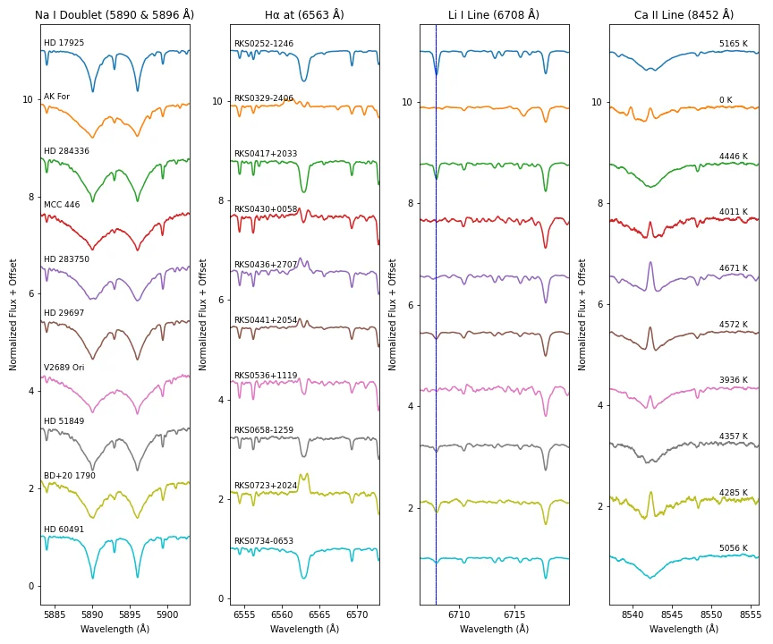

Interdisciplinary Integration
ISLANDS Lab uniquely combines stellar astrophysics, experimental astrobiology, and technosignature analysis to address fundamental questions about where life can exist and thrive around different star types. This integrated approach allows us to evaluate habitability from multiple perspectives that cannot be answered by any single field alone.
Stellar Spectroscopy
ISLANDS Lab characterizes stellar properties and magnetic activity evolution for K dwarf stars in the solar neighborhood. We analyze archival space telescope observations and optical spectroscopy to identify stellar hosts that provide stable, long-term habitable environments.
Bowtie plot showing declination and distance distribution for our 580 K dwarf sample.
Polar plot showing right ascension and distance distribution for the complete equatorial census.
Spectral Diagnostics for Age Determination
Spectral diagnostics showing how lithium abundance and Hα emission distinguish young, active K dwarfs from older, calmer systems.
Astrobiology: Life Under Different Starlight
ISLANDS Lab conducts laboratory experiments to understand how photosynthetic organisms respond to stellar illumination environments different from our Sun, connecting stellar properties to biological constraints and opportunities.

Photosynthetic organisms under standard illumination in ISLANDS Lab growth chambers.
Same organisms under simulated K dwarf stellar spectra using optical filters and LED arrays.
Technosignatures
In collaboration with Prof. Abel Méndez (Planetary Habitability Laboratory, University of Puerto Rico at Arecibo), ISLANDS Lab investigates the famous Wow! Signal and other unexplained astronomical phenomena to refine future technosignature search strategies.
The famous Wow! Signal detection from August 15, 1977, showing the "6EQUJ5" sequence that was 30.5 times stronger than background noise.
PanSTARRS archival imaging (2009-2014) of the Wow! Signal field, showing the dual-horn beam positions for optical follow-up.